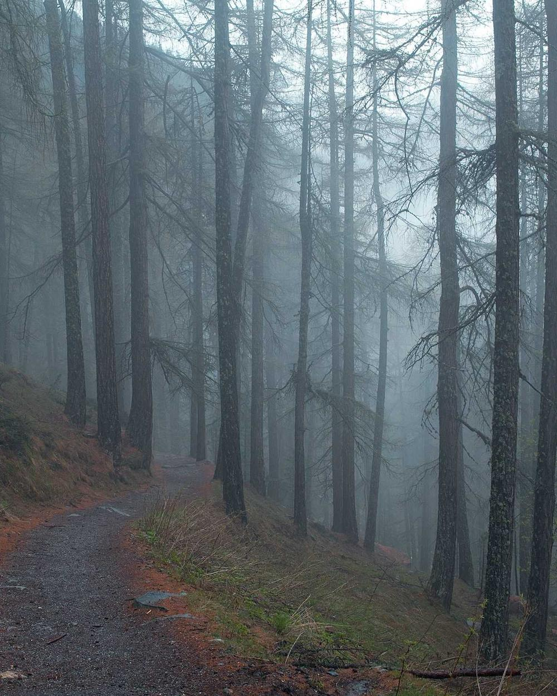

I left work a little later than usual. By the time I got out of the building every streetlamp was on, that orange light spilling over a road still wet from the afternoon. The sky wasn't dark yet, but it wasn't light either. Blue, like someone had stirred ink into water.
I stood at the bus stop for ten minutes without remembering which line I was waiting for. My headphones were still playing the old song, the one I wore out in eleventh grade, and the chorus came round just as a bus went past without stopping.

Some days nothing is sad, exactly. You just can't find where you are. Today was one of those.
When I got home I made a cup of tea, opened the balcony door to let the wind in, and sat down to write this. It will probably rain again tomorrow.
Here ends 19 October.
4 notes on this night
“Blue, like someone had stirred ink into water.” I sat looking out of the window for a while after reading that.
Thank you. Only after writing it did I notice the sky really was like that.
Listening to this song at a bus stop is a lost cause.
It is raining tomorrow, for real. Bring an umbrella.